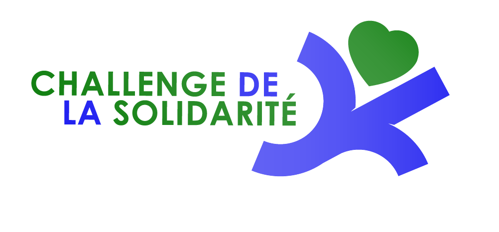

Courir pour soi c'est bien. Courir et donner son souffle pour ceux qui en ont besoin c'est mieux !

Voilà l'esprit de ce Challenge : l'ensemble des bénéfices des épreuves est reversé au profit d'œuvres humanitaires.
Saison 2025
Saison 2025
Les épreuves inscrites au Challenge de la Solidarité sont des trails ou courses à pied nature des zones géographiques Trégor-Argoat. Le barème de points sera identique pour toutes les épreuves et ce, quelle que soit la distance choisie.
Les manifestations, membres du Challenge de la Solidarité, devront reverser tout leur bénéfice (et non pas un pourcentage) au profit d'une œuvre humanitaire.
Un classement par points sera établi à partir de celui de chaque épreuve et remis à jour après chaque manifestation. Pour faire partie du Challenge, il y a obligation d'avoir réglé son inscription au minimum au nombre de courses moins une.
Le classement final du challenge prendra en compte les 3 meilleures performances réalisées par chaque participant sur l'ensemble des épreuves, ce qui autorise deux absences (sans que cela soit obligatoire, les trailers solidaires ont la possibilité de régler la ou les courses auxquelles ils ne peuvent participer).
En partant du classement scratch masculin et du classement féminin (toutes catégories d'âge confondues, barème identique pour les hommes et les femmes), l'attribution des points s'effectuera de la manière suivante, pour chaque course : 1 point attribué pour la 1ère place, 2 points pour la 2ème, etc.
Seront récompensés par des lots qualitatifs, les 3 premières femmes et les 3 premiers hommes. Tous les finishers recevront également un lot et seront invités à la soirée bilan en fin d'année.
Les participants doivent faire preuve d'un esprit sportif, de Solidarité et de respect vis-à-vis des organisateurs, des bénévoles ainsi que de l'environnement ; tout manquement à ces recommandations pourra faire l'objet d'une disqualification.
Les inscrits non arrivants se verront attribuer le nombre de points du dernier majoré de 200.
Les organisations du Challenge de la Solidarité s'engagent à porter une attention particulière à l'accueil des participants : convivialité, ravitaillements, animations musicales…